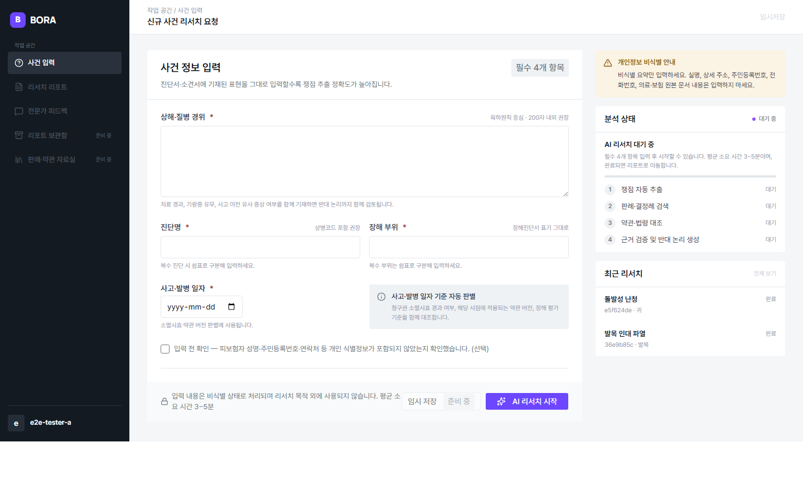
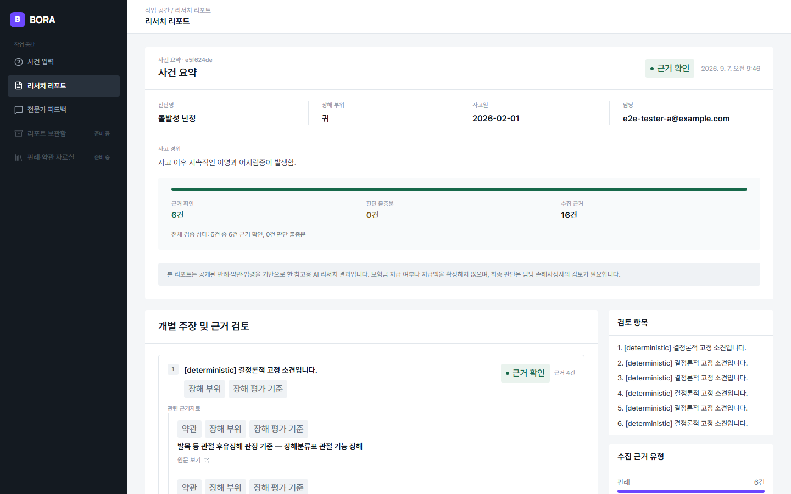
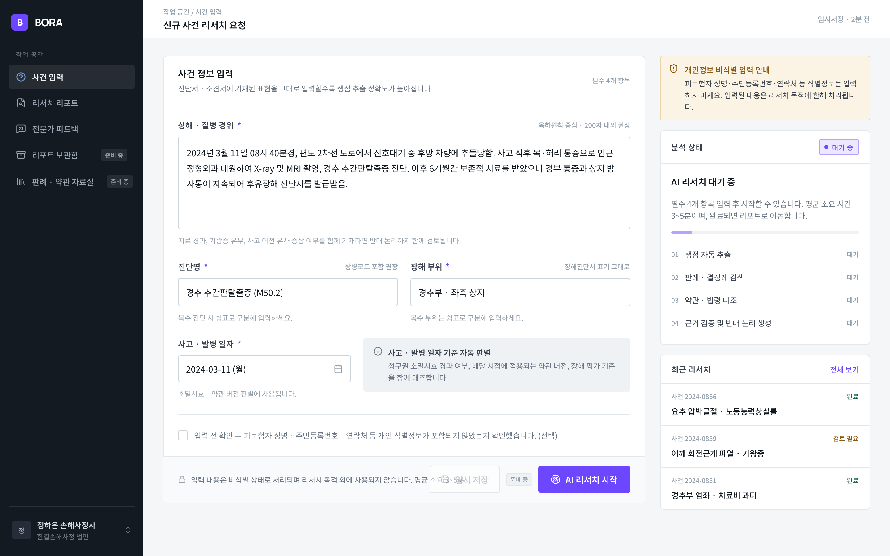
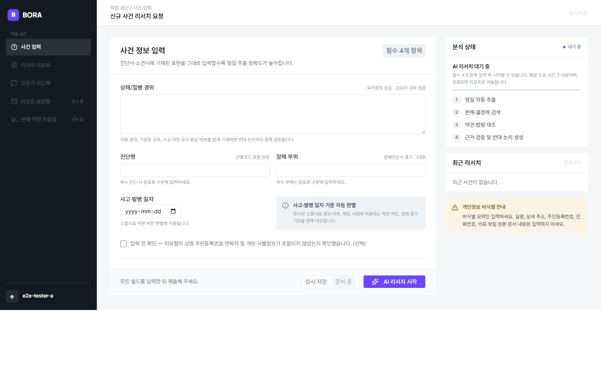
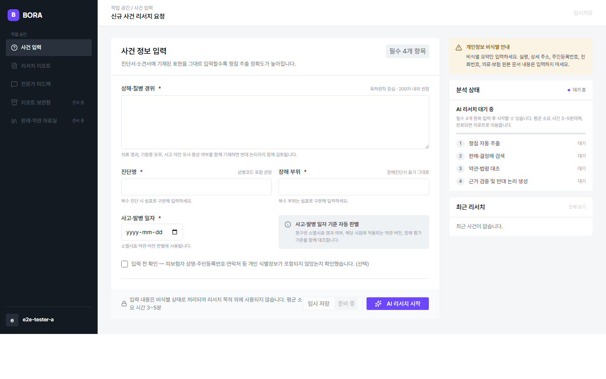
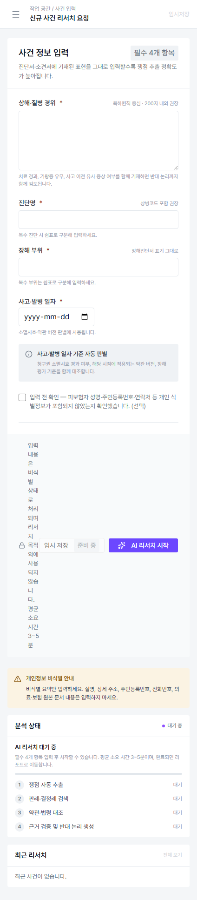
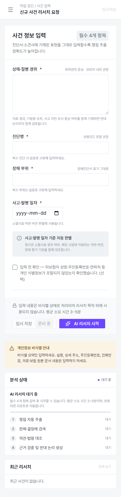
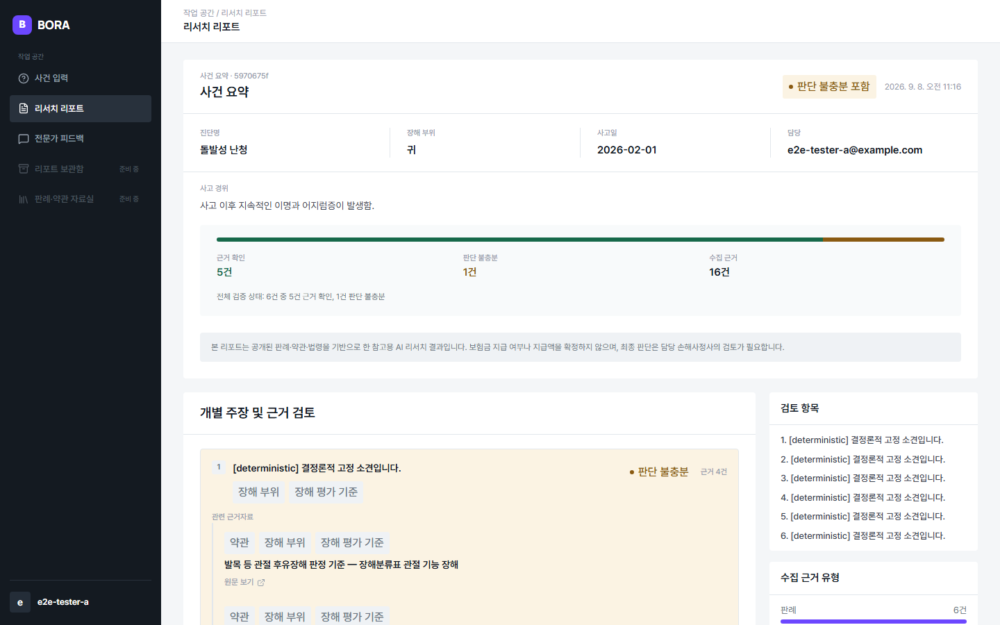

After — Round 4 (최근 리서치 2건, 실제 DB 데이터)

After — Round 4 리포트(VERIFIED claim 확보)

[SUPERSEDED — Round 5 fixture 확보] Round 4 리포트(INSUFFICIENT 재현 시도, 결과: 자연 발생 미확인)

이 문서의 "After" 열은 Round 4에서 확정된 사건 입력 화면 상태이며, Round 5는 이 화면 자체를 변경하지 않았다(모바일 Footer 레이아웃 붕괴 수정만 Round 5에서 발생 — 아래 세 번째 행 참조). 이 페이지 자체는 Round 5 correction pass에서 stale 내용(INSUFFICIENT 캡처 상태, commit SHA)을 정정했다.








| viewport | 1440×900 | ||
|---|---|---|---|
| commit SHA | Before(데이터 채움 비교): b05eb5a24edef19c0ef1580bdbcab15d108f5b3c · Before(모바일 Footer): c210ebff732f2355d52359113762a55515680528(Round 4, origin에 push됨) · After(모바일 Footer 수정, Round 5 최초 작업 커밋): f6ea25a614782ae60c1e2c0ceaf575483d59087c (plan/SPEC-UI-MIGRATION-001) · After(이 문서의 실제 스크린샷 — INSUFFICIENT fixture + 모바일 Footer production 재캡처, Round 5 correction pass): eb2171e (production 빌드 기준 재캡처, 아래 "Round 5 correction pass" 행 참조) | ||
| 데이터 상태 | Pencil/Before는 임의 샘플 텍스트 채움 상태. After는 (a) 빈 입력 + 최근 리서치 0건, (b) 빈 입력 + 최근 리서치 2건(실제 DB 사건 2건 생성), (c) 리포트 화면 VERIFIED, (d) 리포트 화면 INSUFFICIENT 재현 시도 — 4가지 상태를 모두 확보. | ||
| 측정한 주요 차이 |
|
||
| route / scroll 위치 | /cases/new(인증된 테스터 세션). 데스크톱 캡처는 top-of-page(fullPage 아님), 모바일 Footer 캡처는 390px fullPage(전체 페이지). | ||
| 의도적 편차(사용자 승인 또는 근거) |
|
||
| Round 5 correction pass — INSUFFICIENT 상태 최종 해결 |
[SUPERSEDED — Round 5 fixture 확보] 위 "의도적 편차" 목록에 과거 있었던
"INSUFFICIENT claim 미확보(재현 불가, 잔여 위험)" 항목은 더 이상 유효하지 않다 — 해당
한계는 자연 발생(정상 사용자 플로우로 유도) 경로에만 적용되는 한계였고, Round
5에서 결정론적 fixture로
판단 불충분(INSUFFICIENT) 1건이 실제로 렌더링됐음을 확인했다 — 캡처 직전
최종 성공 증빙 파일: |
||